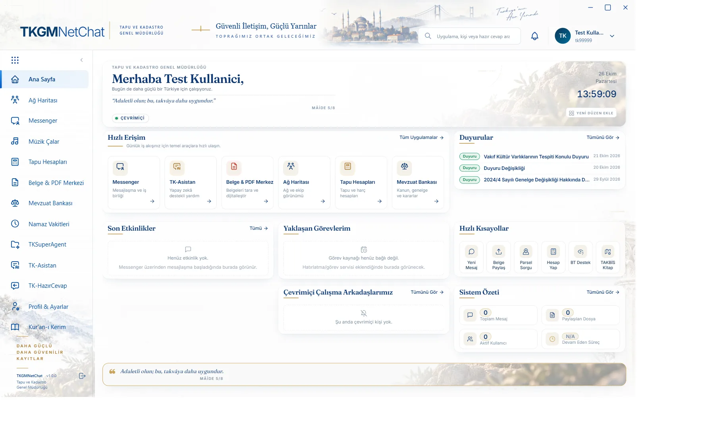

Kesintisiz & Güvenli İletişim
Uçtan uca şifreli mesajlaşma, anketler ve ekran paylaşımı. Konuşmalar yalnızca ilgili kişiler arasında kalır.
Tapu ve Kadastro için
Mesajlaşma, belge işlemleri, yapay zeka ve uzaktan destek; verinizin kurumunuzda kaldığı tek bir uygulamada.
Windows 10 / 11 · 64-bit · Sonraki sürümler uygulama içinden tek tıkla gelir

Uçtan uca şifreli mesajlaşma, anketler ve ekran paylaşımı. Konuşmalar yalnızca ilgili kişiler arasında kalır.
300 sayfalık dosyaları kalite kaybı olmadan PTT KEP sınırına (100 MB) indirir.
Kurum içi belgelere ve mevzuata hâkim yapay zeka asistanı.
Kurum içi ekran paylaşımı ve teknik destek altyapısı; yardım isteyen kişinin ekranına birkaç saniyede bağlanın.
Kurulumdan sonra güncellemeler uygulamanın içinde "Yeni sürüm hazır" bildirimiyle gelir.
Windows İçin İndir (v1.0.0)Uygulama henüz dijital imza almadığı için Windows ilk açılışta kurulum programını tanımayabilir. Bu, uygulamanın zararlı olduğu anlamına gelmez; yalnızca imza sertifikası sürecinin sürdüğünü gösterir.
Bu adım yalnızca kurulumda bir kez gerekir.